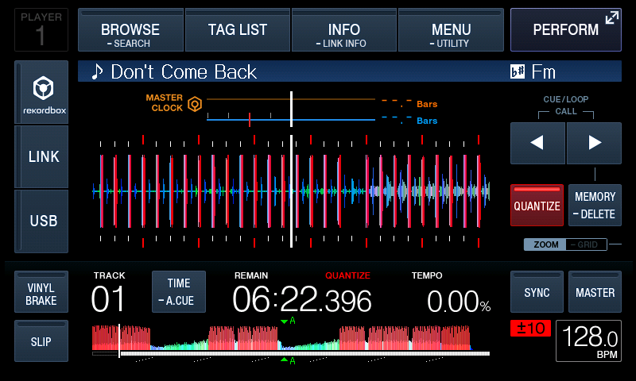
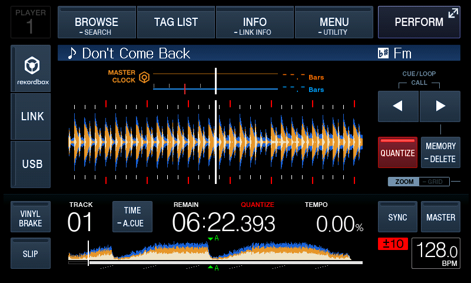
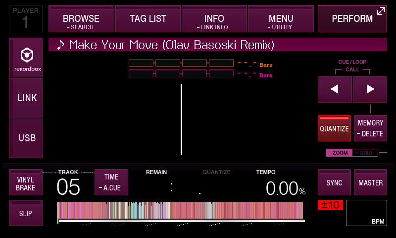
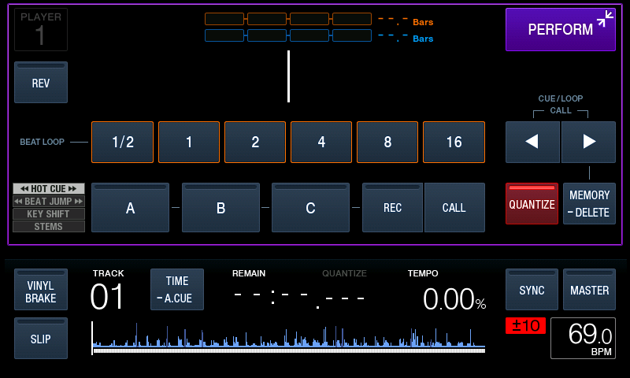
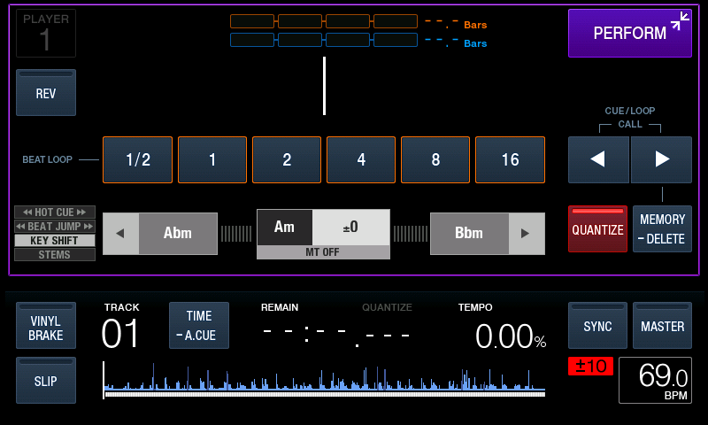
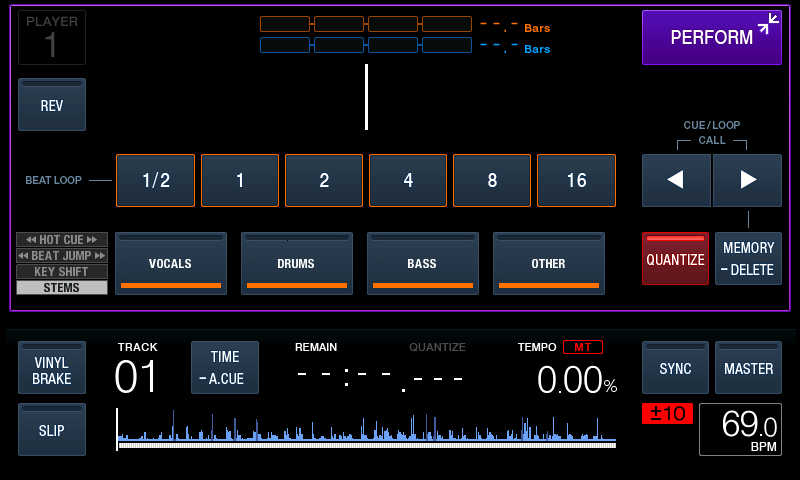
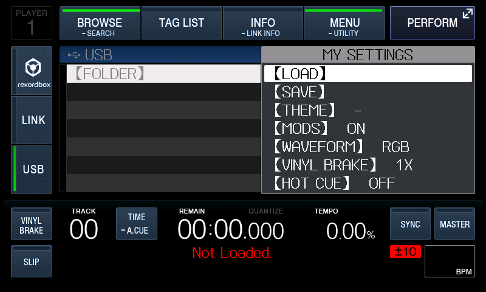
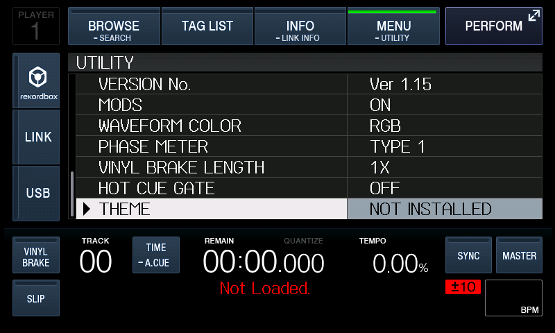
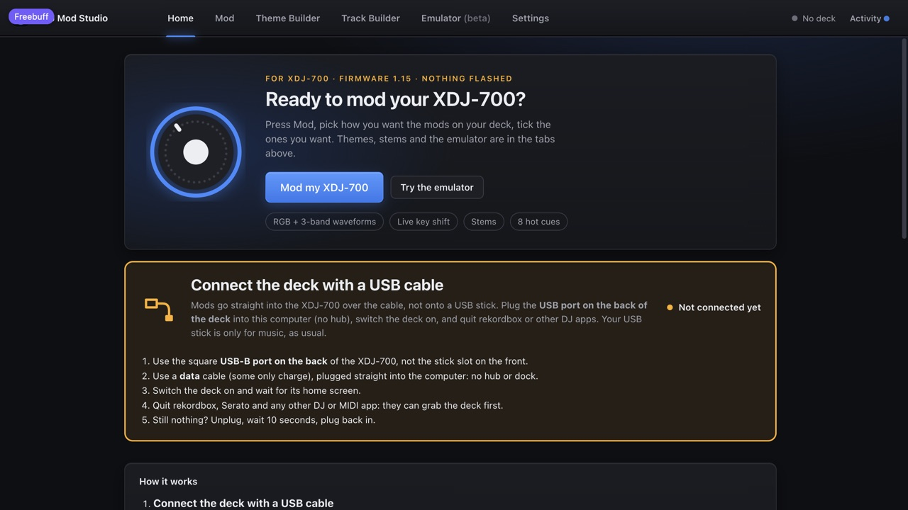

Free XDJ-700 mods: the features your deck never got.
XDJ-700 mods that add RGB and 3-band waveforms, live key shift, stems, 8 hot cues, beat jump pads and colour themes to the deck you already own. The recommended route is the USB-stick loader: one firmware update installs it, and after that the mods travel on your stick and survive a power cycle. Cable mode installs nothing — it sends the mods into the deck's memory for the session, and a power cycle puts it back to stock.
Illustration drawn in your browser from a made-up track, using the same colour rules as the mod.
What you get
Each mod is a small patch the deck runs from memory. Pick the ones you want in Mod Studio and change most of them on the deck itself, in the deck's own UTILITY list (hold MENU, scroll to the end).
RGB & 3-Band waveforms
Colour waveforms in the overview strip and the big centre display, from the colour data rekordbox already exports. Switch style on the deck in UTILITY.
Live key shift
PERFORM › KEY SHIFT moves any track up or down in key while it plays, with MASTER TEMPO on. Tempo stays put, and the panel shows the track's real key.
Stems
Split a track into vocals, drums, bass and other on your computer, then mute them live from PERFORM › STEMS. A WAV or AIFF track is replaced under its own name, so its cues and playlists still work and the original is kept as a backup. An MP3 or M4A gets a Title (STEMS).wav next to it, which the deck shows under BROWSE › FOLDER — scroll past SEARCH and press the knob on FOLDER to open it (the right-hand pane says EMPTY while the row is only highlighted); it is not in the Track/Artist lists. Replacing those in place too is in the next update.
Beat jump pads
A new PERFORM tab: tap to jump back or forward, swipe the row for sizes from 1 up to 64 beats. The same page carries 8 hot cues, and pressing an empty pad while the track plays stores that point. The hot cue pages (A–C, D–F, G–H) change when you tap the HOT CUE tab; there is no swipe paging.
Live themes
Recolour the whole interface from the deck's UTILITY list (THEME), and OFF brings back the exact stock colours.
Mod Studio + emulator
A Mac and Windows app that prepares tracks, designs themes and installs mods. It also runs your own deck firmware in an emulator, so you can try everything before touching the hardware.
What it actually looks like
Every picture below is the deck's own screen, captured from the emulator running your deck's firmware — not a mockup and not a drawing. Same pixels the XDJ-700 shows, with the mods switched on: the waveform colours, the themes, the PERFORM tabs and the extra settings all come from the same firmware you install.









Three ways in — you choose how much gets written
The XDJ-700 has a service connection over USB that can read and write the deck's working memory. Every route below goes through it, but they are not equally permanent: one writes nothing at all, the other two write the firmware once.
| Route | What it writes | Survives a power cycle? | Cost |
|---|---|---|---|
| Cable | The deck's working memory only — nothing is flashed | No: off and on puts it back to stock | 15–30 minutes the first time, then one click |
| Stick loader · recommended | One firmware update that teaches the deck to read the mods off your stick | Yes — and no laptop needed at the gig | One flash, then about 5 minutes per stick rewrite |
| Update file | A full Pioneer update with the mods baked in | Yes | One flash, and a rebuild whenever you change your mods |
Cable is where to start. The mods are copied into the deck's working memory and nothing on flash changes, so a power cycle is a complete undo — switch the deck off and on and it is stock. That is also how you remove them; the app offers to re-install whenever you plug the deck back in.
The stick loader is what we recommend for your own deck. It is a firmware update built from your own 1.15 file in which only 9 bytes differ: it teaches the deck's own mount routine to read XDJMODS/PACK.BIN from any stick. After that single flash there is no laptop in the chain — put your normal rekordbox stick in and the mods are there. Changing your mods later rewrites the stick in about 5 minutes and never touches the deck again. To try that stick file without flashing anything at all, the app can also send the 2.7 KB reader over the cable for one session.
A firmware update file is the whole firmware with the mods baked in. The app only builds it and boot-tests it in the emulator; you run the update yourself, the normal Pioneer way. This is the route that can leave a deck needing a Pioneer service centre if power is lost mid-flash. The way back is the app's Back to stock build — it makes a stock file numbered higher than what your deck reports, which the deck will accept, because the official 1.15 file can be refused as older. Build it before you need it and keep it on a second stick.
Safety rules in every tool
- The cable route writes only inside the deck's RAM window, and the firmware-erase command appears in no tool.
- Every byte is checked before it changes and read back after; anything unexpected stops the install.
- A read-only survey proves the memory a mod will use is empty on your deck first.
- Each mod runs in the emulator against the real firmware before it goes near hardware.
- Themes only recolour artwork that still matches its stock fingerprint, so live data is never touched.
- The two flashing routes only ever happen through Pioneer's own updater, from a complete boot-tested file — never a partial write from a mod tool.
Get started
You need a Mac with Apple Silicon (M1 or newer) and macOS 14+, or a 64-bit Windows 10/11 PC, plus a USB cable and an XDJ-700 on firmware 1.15.
- Download Mod StudioGet it from the Releases page. Mac: the first time, right-click the app and choose Open. Windows: unzip it and run XDJ Mod Studio.exe; if SmartScreen warns, choose More info → Run anyway.
- Add your firmware fileUse the official XDJ-700 v1.15 update file from Pioneer DJ's support site. The app never ships Pioneer's firmware; it reads yours.
- Try it in the emulatorInsert your rekordbox USB library, load a track and switch waveform styles. No deck needed.
- Install over the cable firstConnect USB, tick the mods you want, click Install — about 15–30 minutes the first time, with a progress bar and a time estimate. Nothing is flashed and a power cycle undoes all of it, so this is the honest way to find out whether you like the mods.
- Then make it permanent, if you wantBoth options are on the app's stick page. Stick loader: one flash teaches the deck to read the mods off your own stick, and changing them later is a 5-minute stick rewrite. Update file: everything baked into a firmware image you flash yourself. Both need mains power and a flash you must not interrupt — and for the update file, build Back to stock first and keep it on a second stick, because that is the reliable way back.
Prepare tracks
Mod Studio's Track Builder can:
- add 3-band waveform data to tracks rekordbox didn't analyse that way,
- split stems on your computer (Demucs) and replace a WAV or AIFF track with a version you can mute live on the deck; MP3 and M4A keep the original and get a
(STEMS)file next to it, under BROWSE › FOLDER.
A stems file is still a normal WAV or AIFF, so it plays on any deck and in rekordbox. Where the track was replaced, the original stays beside it as .pre-stems, so undoing it is a rename.
FAQ
Will this void my warranty or damage the deck?
In cable mode the mods only change the deck's working memory, which is cleared every time it powers off — nothing on flash changes. The stick loader and the baked update file each write the firmware once, through Pioneer's own updater, and if power is lost mid-flash a deck can need a Pioneer service centre. That is why the cable route exists and why it is where we suggest you start. Either way this is unofficial software and you use it at your own risk.
How do I remove the mods?
Cable: switch the deck off and on — it starts up completely stock. Stick loader: the mods live in a file on your stick, so take that off (or leave the stick out) and the deck boots stock; the small reader stays on the deck but does nothing without the file. Update file: build Back to stock in the app and flash it the same way you flashed the modded one.
Do I have to reinstall after every power-cycle?
Cable: yes — Mod Studio remembers your choices, so it is one click when you plug the deck in. The stick loader and the update file both survive a power cycle; that is the whole reason to use them.
Does it work on the XDJ-1000 / MK2 or CDJs?
No. Everything is built for the XDJ-700 on firmware 1.15 only.
Windows?
Yes: download the Windows zip from Releases (64-bit Windows 10/11). It is built from the same source as the Mac app and every build is checked automatically on a clean Windows machine — the app starts, its pages load and the emulator engine loads — and mods have been installed on a real deck from Windows. Emulator sound on Windows came later than on the Mac, so if it is silent, set XDJ_DECK_SOUND=1. If something misbehaves, please open an issue with the log from the Details pane.
Is it open source?
Yes. Everything is on GitHub under the MIT licence: the Mac and Windows apps, the emulator, every mod and the tools that build them. The only thing not included is Pioneer DJ's firmware, which you add yourself.
Why isn't the firmware included?
It's Pioneer DJ's software. You download the official update file yourself, and the tools work on that.